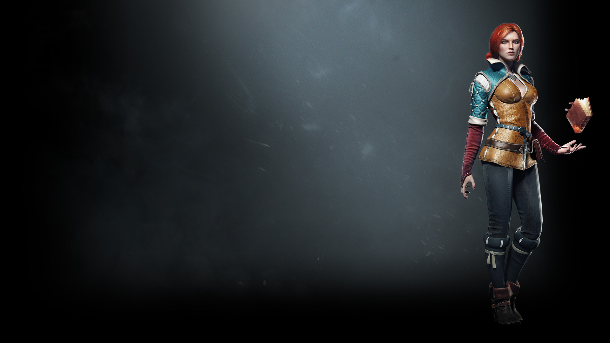
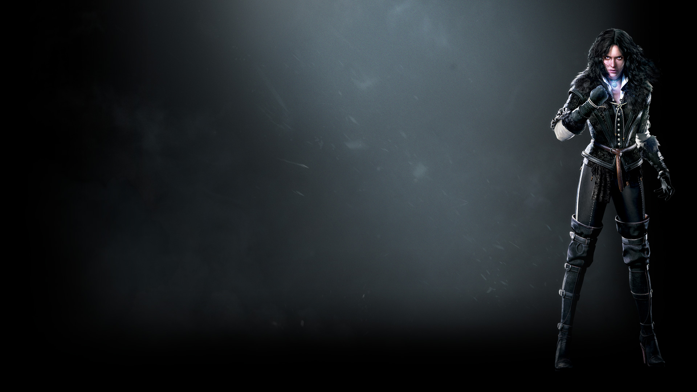
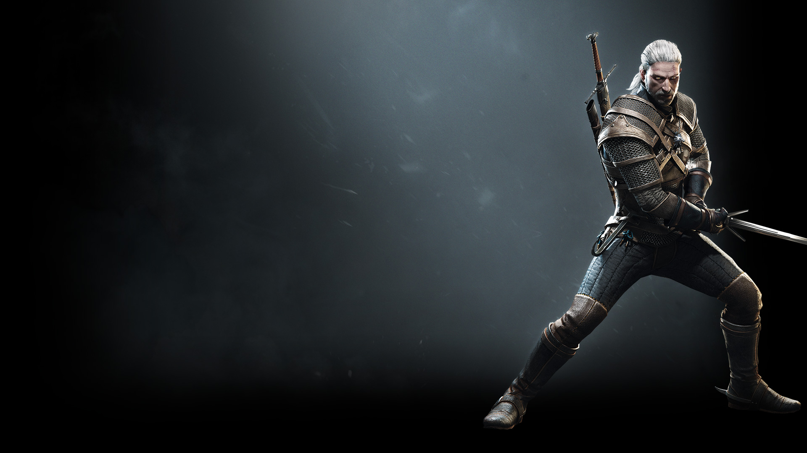
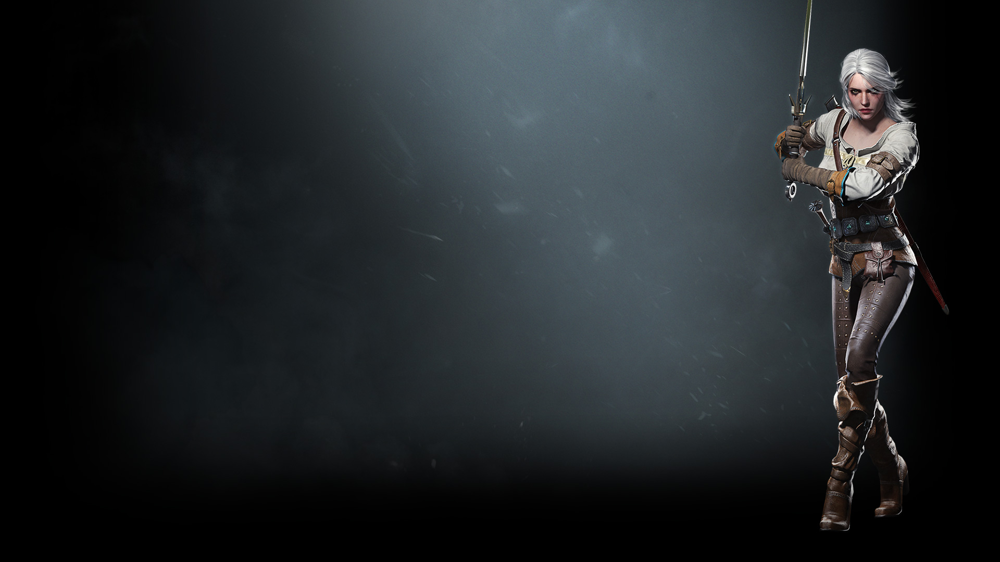
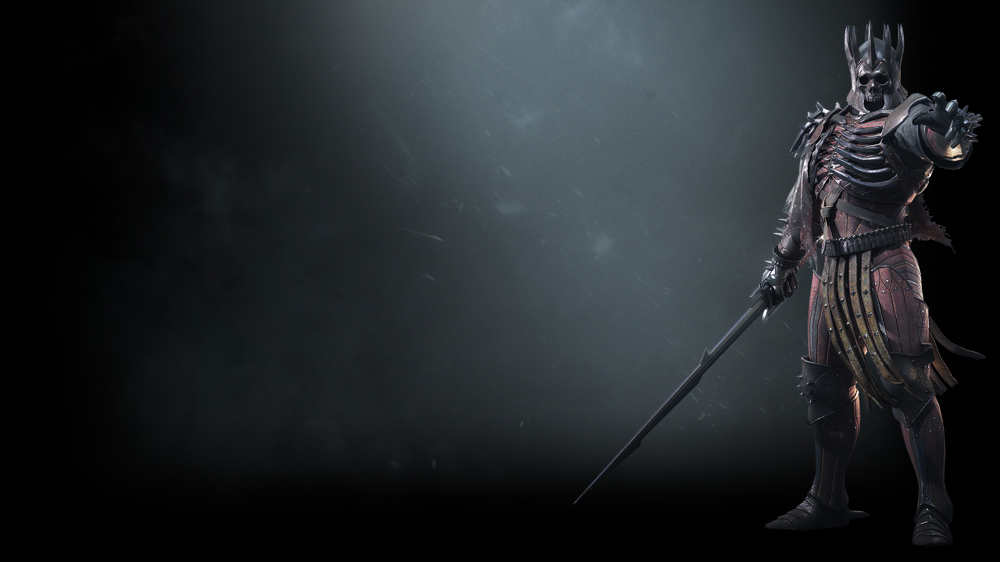

Triss Merigold
Triss Merigold of Maribor was a legendary Temerian sorceress of the 13th century.
Called Fourteenth of the Hill by her contemporaries because she was erroneously thought to have been
killed during the Battle of Sodden Hill, she passed into history as Merigold the Fearless. A member
of King Foltest's royal council along with Fercart and Keira Metz, as well as a founding member of
the Lodge of Sorceresses, she was involved in politics for most of her life.

Yenefer of Vengerberg
Yennefer of Vengerberg, born on Belleteyn in 1173, was a sorceress who lived in Vengerberg,
the capital city of Aedirn. She was Geralt of Rivia's true love and a mother figure to Ciri,
whom she viewed like a daughter to the point that she did everything she could to rescue the
girl and keep her from harm.

Geralt of Rivia
Geralt of Rivia was a legendary witcher of the School of the Wolf active throughout the 13th
century. He loved the sorceress Yennefer, considered the love of his life despite their tumultuous relationship,
and became Ciri's adoptive father. During the Trial of the Grasses, Geralt exhibited unusual tolerance for the mutagens that grant witchers their abilities.
Accordingly, Geralt was subjected to further experimental mutagens which rendered his hair white and may have given him greater speed, strength, and stamina than his fellow witchers.

Ciri
Cirilla Fiona Elen Riannon (better known as Ciri), was born in 1252 or 1253,[4] and most likely
during the Belleteyn holiday.[5] She was the sole princess of Cintra, the daughter of Pavetta and Emhyr var
Emreis (who was using the alias "Duny" at the time) as well as Queen Calanthe's granddaughter.

Eredin
Eredin is the fourth and final member of the Wild Hunt crew. This boss battle is long and
taxing, but is more than doable. The key to the entire fight is being patient and not becoming greedy with your
strikes. When you try to wail on Eredin, he will hit back—hard and fast. Quen is your best friend during this
fight. Make sure to use it often.